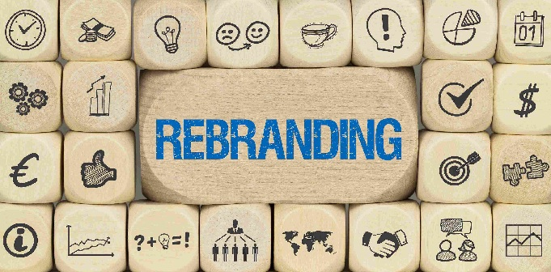
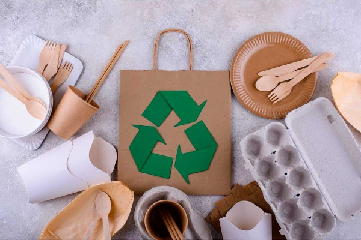

Marcas Garcilaso es una empresa de desarrollo de páginas web, orientada a HTML. Llega a este pueblo con ambición y nuevos proyectos, que no dejan insatisfecho a nadie. A continuación veremos los proyectos más destacables:
La empresa ha lanzado un ambicioso proyecto de rebranding global para su marca insignia, con el objetivo de modernizar su identidad visual y reforzar su posicionamiento en mercados internacionales. Este proyecto incluye la actualización del logotipo, el rediseño del empaque de productos, una nueva estrategia de comunicación digital y una campaña publicitaria integral. El rebranding no solo busca atraer a nuevas generaciones de consumidores, sino también consolidar la fidelidad de su base de clientes actual. La ejecución se está realizando en fases, comenzando por América Latina y Europa, y cuenta con la colaboración de agencias creativas líderes en branding y diseño.
En paralelo, la empresa ha iniciado un proyecto para desarrollar una línea de productos sustentables bajo una de sus marcas secundarias. Esta iniciativa responde a la creciente demanda del mercado por opciones más ecológicas, y se enfoca en el uso de materiales reciclables, ingredientes orgánicos y procesos de producción responsables. Aunque el alcance es más limitado, el proyecto servirá como piloto para evaluar la viabilidad de escalar prácticas sostenibles en otras marcas del portafolio.
Otro proyecto en curso es la implementación de una nueva plataforma digital de fidelización para clientes frecuentes. La herramienta permitirá a los usuarios acumular puntos, recibir promociones personalizadas y participar en experiencias exclusivas relacionadas con las marcas del grupo. Aunque el impacto inicial es regional, se espera que este sistema fortalezca la relación directa con los consumidores y genere datos valiosos para futuras estrategias de marketing personalizado.